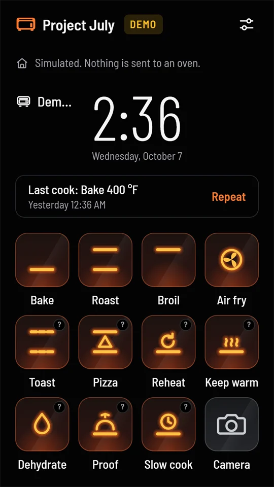
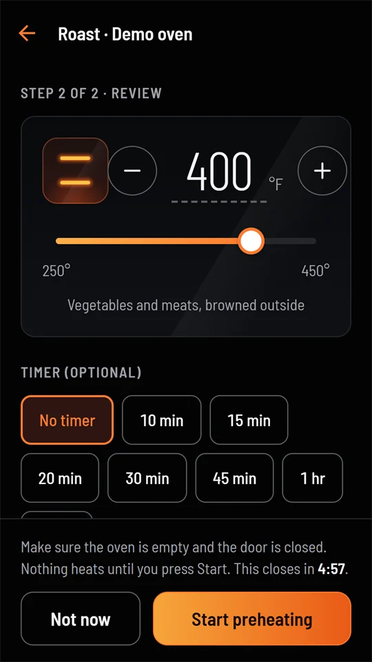
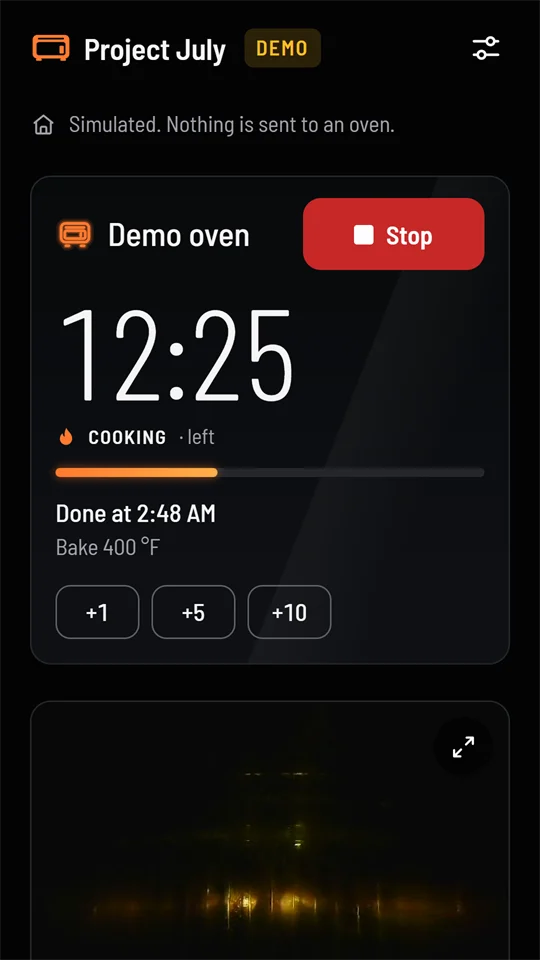
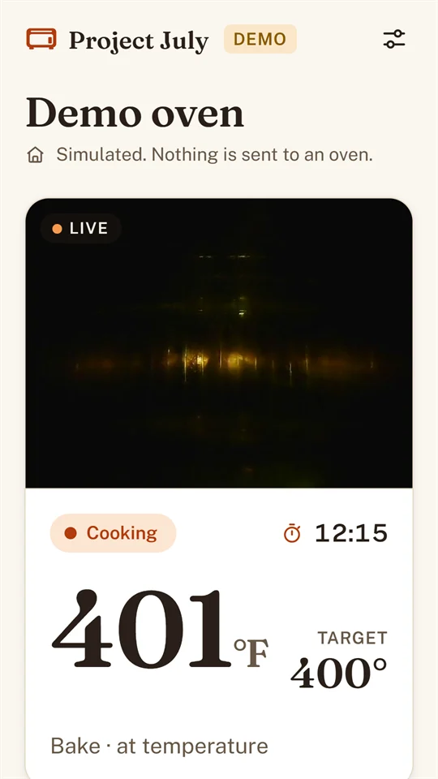

The same app as on Android, built from the same code: preheat, set a timer, watch the camera and stop a cook. It talks straight to your June oven over your home Wi‑Fi, with no cloud, no account and no subscription.

The iPhone version is in testing on Apple's TestFlight. There's no public link yet, so ask for an invite by email.
Install Apple's free TestFlight app from the App Store, open the invite on your iPhone and select Accept, then Install. Updates arrive through TestFlight.
Have an Android phone too? The Android beta is open now on Google Play.
june.local.Commands are always signed by your phone, so the oven only obeys phones it has paired with. To also encrypt the link, add your home's certificate in the app (Settings › Connection › Home certificate), or install ca.crt on the iPhone: AirDrop or email it to yourself, install the profile, then turn it on under Settings › General › About › Certificate Trust Settings.
Every screen is the same as on Android. The Android page has the full tour.



Something else? Ask in the Project July Beta Google group (anyone can join), or email hello@project-july.org.
Check that Project July is allowed under Settings › Privacy & Security › Local Network, and that the iPhone is on your home Wi‑Fi. Then type the address yourself: june.local, or the oven's IP address.
The app asks only to add pictures to your library, when you first tap Save. It can't see your photos.